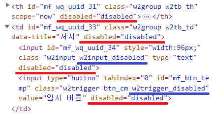
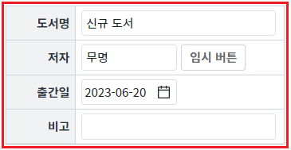
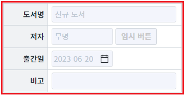
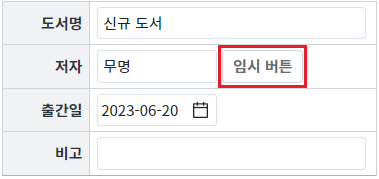
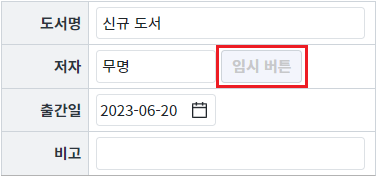

컴포넌트에 공통으로 제공하는 함수 'setDisabled'의 사용 예시입니다. 함수 'setDisabled'은 컴포넌트의 비활성화 여부를 지정하는 기능으로, 첫 번째 인자에 전달된 값이 true이면 브라우저에 표시된 'element'의 속성 'disabled'값을 'disabled'로 설정합니다.
컴포넌트가 비활성화되었을 때 별도의 CSS 적용의 편의를 위해 웹스퀘에 엔진에서는 브라우저에 표시된 'element'에 class를 추가합니다.
컴포넌트별 적용되는 class명이 다르므로 브라우저 개발자 도구를 통해 확인합니다.
예를 들면 InputBox 컴포넌트는 'w2input_disabled'가 추가되고 Trigger 컴포넌트는 'w2trigger_disabled'가 추가됩니다.
[브라우저(Chrome) 개발자 도구 'Elements' 탭 실행 예시]

Group 컴포넌트 비활성화하기/활성화하기
Trigger 컴포넌트 비활성화하기/활성화하기
STEP1. 초기 상태 확인하기
Group 컴포넌트로 Table이 구성되어 있습니다.
그림 1.브라우저(Chrome) 실행 예시

STEP2. Group 컴포넌트를 비활성화합니다.
버튼 Group 비활성화하기를 클릭합니다.STEP3. 실행된 결과를 확인합니다.
Group 컴포넌트가 비활성화됩니다.
그림 2.브라우저(Chrome) 실행 예시

STEP4. Group 컴포넌트를 활성화합니다.
버튼 Group 활성화하기를 클릭합니다.STEP5. 실행된 결과를 확인합니다.
Group 컴포넌트가 활성화됩니다.
그림 3.브라우저(Chrome) 실행 예시
STEP1. 초기 상태 확인하기
Group 컴포넌트로 Table이 구성되어 있습니다. 두 번째 행에 버튼 '임시 버튼'이 구성되어 있습니다.
그림 4.브라우저(Chrome) 실행 예시

STEP2. 버튼 '임시 버튼'을 비활성화합니다.
버튼 '임시 버튼' 비활성화하기를 클릭합니다.STEP3. 실행된 결과를 확인합니다.
두 번째 행의 버튼 '임시 버튼'이 비활성화됩니다.
그림 5.브라우저(Chrome) 실행 예시

STEP4. 버튼 '임시 버튼'을 활성화합니다.
버튼 '임시 버튼' 활성화하기를 클릭합니다.STEP5. 실행된 결과를 확인합니다.
버튼 '임시 버튼'이 활성화됩니다.
그림 6.브라우저(Chrome) 실행 예시
원하는 시점에 컴포넌트의 함수 'setDisabled'를 이용하여 스크립트를 작성합니다. 첫 번째 인자를 true로 지정합니다.
[소스 코드 예시]
// Group 'grp_exam1'을 비활성화합니다. grp_exam1.setDisabled(true);
원하는 시점에 컴포넌트의 함수 'setDisabled'를 이용하여 스크립트를 작성합니다. 첫 번째 인자를 false로 지정합니다.
[소스 코드 예시]
// Group 'grp_exam1'을 활성화합니다. grp_exam1.setDisabled(false);
setDisabled